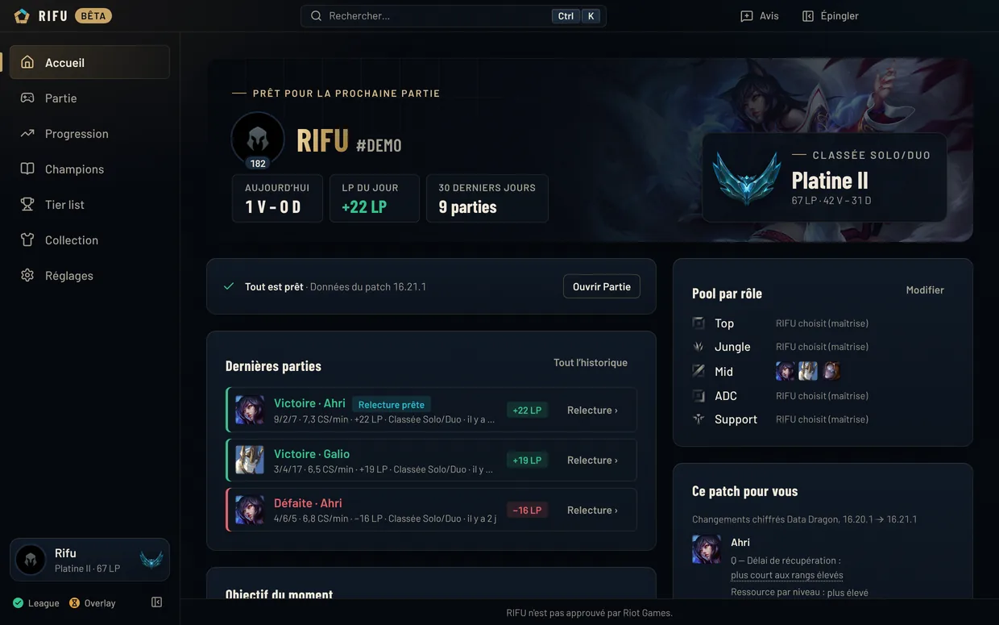
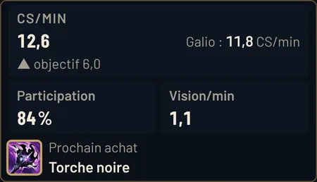
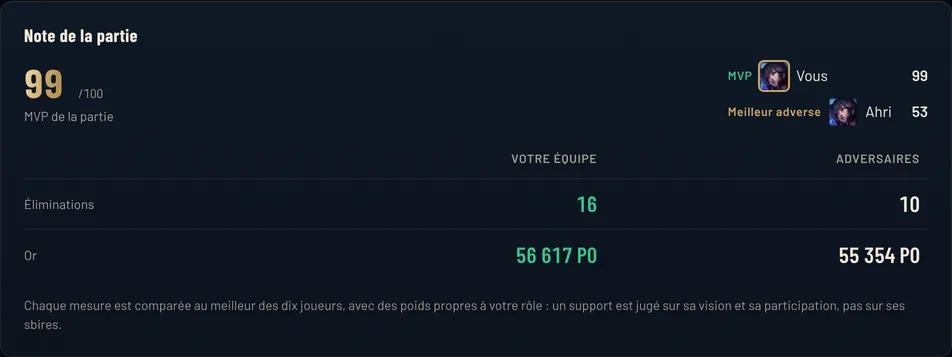
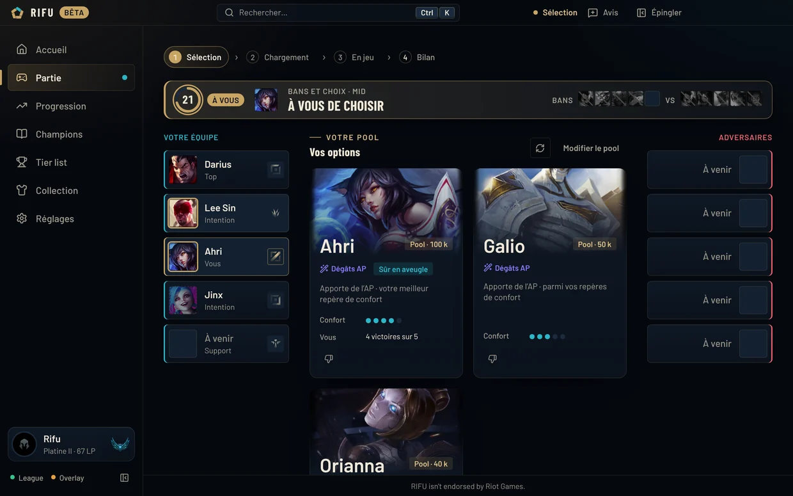
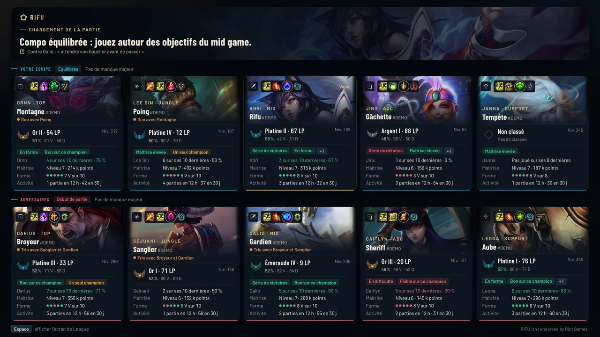
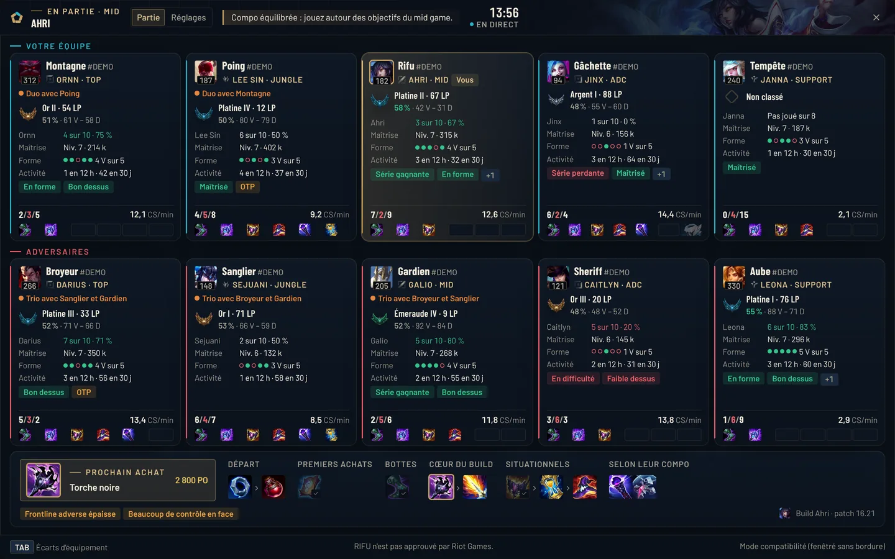
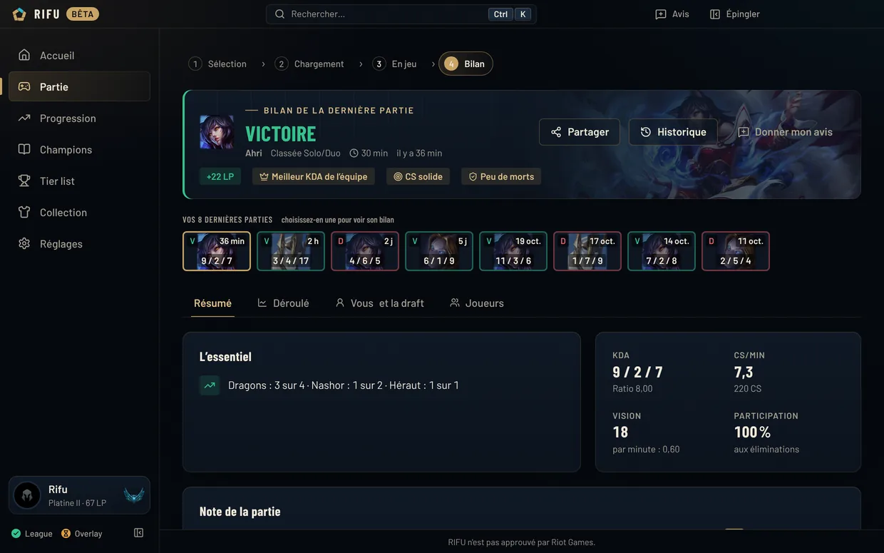

GalioYour pool · 50k mastery
Fills the missing frontline and magic damage.
Play one step ahead
RIFU is the League of Legends companion app that follows you from champ select to the post-game: draft help from your pool, scouting of all ten players, in-game overlays and a game score out of 100, in ranked and in ARAM. All free.



Champ select
RIFU reads the draft live, spots what your comp is missing and suggests three champions from your pool, each with its reason.
Fills the missing frontline and magic damage.
Magic damage and zone control, solid against Zed.
Your most played champion: 7 wins out of 10.
Illustrative demo. In the app, the analysis is based on the profiles of all 173 champions, your games and the patch statistics.
Champ select
RIFU follows the draft live and shows you what each champion in your pool brings to your team. You always have the final say.

Loading screen
A full screen over League's loading screen, with the game plan up top. Rank, form, premades: you know who you're up against before the first second.

In game
A compact HUD that lets your clicks through, the Ctrl + X panel and item gaps on TAB. Set their opacity and size the way you like.

After the game
Each stat is compared with the best of the ten players, weighted by your role. A support is judged on vision, not on minions.

All your modes
The advice changes with the mode. In ARAM, roles no longer matter: the bench and what your team is missing do.
Augment tiers show how often an augment is picked, never how much it wins.
Everything else
What used to take several tools, one of them paid, RIFU brings together in one place.
Top three podium, S+ to D tiers and a “My pool” filter, computed by RIFU from EUW ranked games in Emerald and above.
Rune page, summoner spells on the right key, skill order and item set in the shop. Your own sets are kept.
30-day LP curve, even for games played with RIFU closed.
Ranks, match history, tags and champions of any EUW player.
Your skins out of the total, completion, store value in RP and your chromas. Filter by champion or by skin line: the collection stays on your PC.
Build, runes, skills and matchups for every champion, outside games.
A goal of your choice (CS, deaths, vision), tracked game after game.
Test a comp outside games and see what your pool doesn't cover.
A note against each opponent, shown again at your next draft and loading screen.
Opacity from 30 to 100%, set separately for the HUD, and size from 80 to 130%.
Items, runes and skills update by themselves every patch, with no new version.
Sound alert, and auto-accept if you turn it on.
Comparison
The best of Porofessor and DPM, brought together in one free app.
| Feature | RIFUWindows app | PorofessorWindows app | DPMWindows app |
|---|---|---|---|
| App price | Free | Free with ads | Premium, from €3.33/month |
| Draft help based on your comp's gaps, from your pool | Included | No | Premium |
| Runes, summoner spells and build import | Included | Included | Premium |
| Player tags on the loading screen (streaks, one-tricks…) | Included | Included | No |
| Gold difference and recommended build in game | Included | Included | Premium |
| LP tracking | Included | No | Premium |
| Detailed post-game analysis | Included | Included | Premium |
| Skin collection and RP value | Included | No | Premium |
Based on the public offers of Porofessor and of DPM's Windows app (Premium subscription only, €4.99/month or €39.99/year), checked in October 2026; they may have changed since. Porofessor and DPM are trademarks of their respective owners. RIFU is not affiliated with either of them.
Fair play
RIFU never reads the game's memory and never modifies League's files.
Never “play X”. Suggestions come from your pool, not from a single meta.
No MMR estimate, no unmasking of hidden players, no tracking of enemy summoner spells.
Match history, notes and settings stay on your PC. Your feedback is only sent with your consent.
Install
RIFU-Setup-….exe file, on this page or on the releases page.Questions
Yes, completely. In the long run, RIFU will be funded by discreet ads, only inside the RIFU window and outside games: never in champ select, on the loading screen, in game or in an overlay.
That's the goal. RIFU brings loading screen scouting, a draft assistant, in-game overlays, a post-game breakdown and LP tracking into one app, with no subscription. Its strength: it explains what your comp is missing and suggests champions from your own pool.
Not yet. For now, the app's interface is in French, as shown in the screenshots on this page.
RIFU only uses the interfaces Riot provides to third-party apps: the Riot API, the League client API and the live game data. It never reads the game's memory, never modifies League's files and never plays for you.
It follows Riot's rules for third-party apps: several options rather than a forced pick, no MMR estimate, no unmasking of hidden players in champ select, no information missing from the client that would give an advantage.
The beta is closed and invite-only, with a personal code for each player. Join the RIFU Discord to ask for a spot.
Each stat of the game (kills, participation, damage, gold, minions, vision, objectives) is compared with the best of the ten players, then weighted by your role. The best player on the winning team is MVP, the best on the losing team is ACE. It is neither a rank nor an MMR estimate.
No. They never take focus from the game, the HUD lets your clicks through, and you set their opacity (30 to 100%) and size. During the beta, they need borderless window mode; fullscreen will come with the signed version.
No. RIFU is a standalone app: it doesn't need the Overwolf client.
During the beta, the installer isn't signed with a certificate yet, so Windows SmartScreen flags it. Signing is planned for the public release. Until then, only download RIFU from this site or the official releases page.
Summoner's Rift (normals, ranked, Co-op vs. AI, custom games), Swiftplay, ARAM and ARAM Mayhem. In Arena, RIFU gives no draft advice, and Brawl games aren't tracked. EUW server, on Windows 10 and 11.
The minimum needed to show profiles and the loading screen. Everything else stays on your PC, and feedback is only sent if you turn it on. The details are in the privacy policy (in French).
Closed beta
Free, for Windows. Join the Discord to get your beta code.